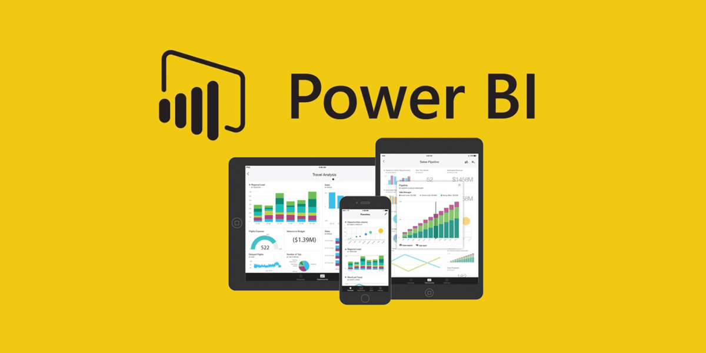
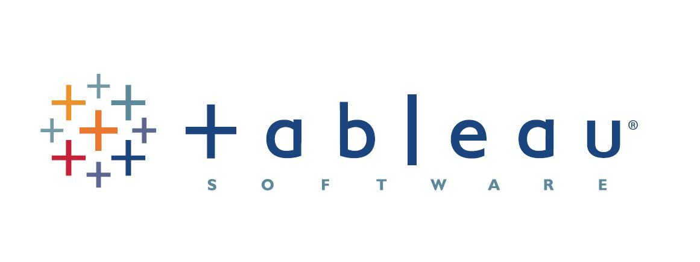

Data Cleaning in SQL
In this project i clean data using SQL server

Data analyst with strong skills in Excel, SQL, Power BI, Tableau, and Python. Experienced in data cleaning, exploration, and visualization to uncover insights and support smarter decisions Creative Commons license.
In this project i clean data using SQL server

Data Exploration for employees dataset using SQL instructored by Maven Analytics Advanced SQL Course

This dashboard provides a clear overview of key business metrics, including revenue, profit, orders, and return rate. It tracks revenue trends over time, analyzes orders by category, and highlights top-performing products along with return percentages.

Visualizing different data sets using Tableau

Visualizing, exploring and cleaning data sets using Python Libraries
This dashboard helps stakeholders understand trends, salaries, skills, and satisfaction in the data profession to support career decisions and industry analysis.
Cairo, Egypt